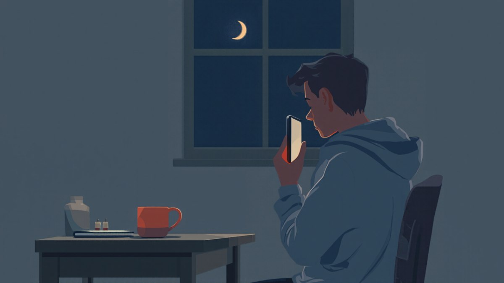
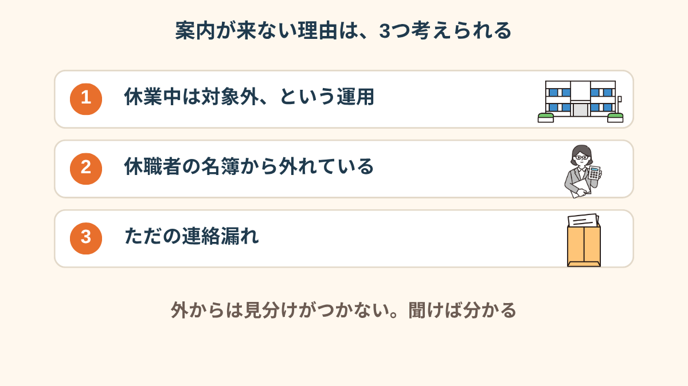
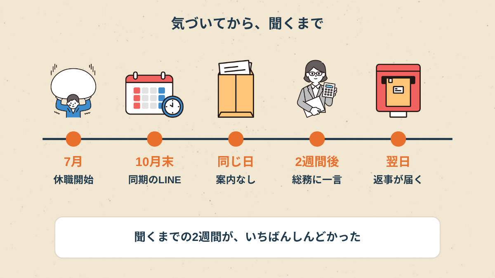
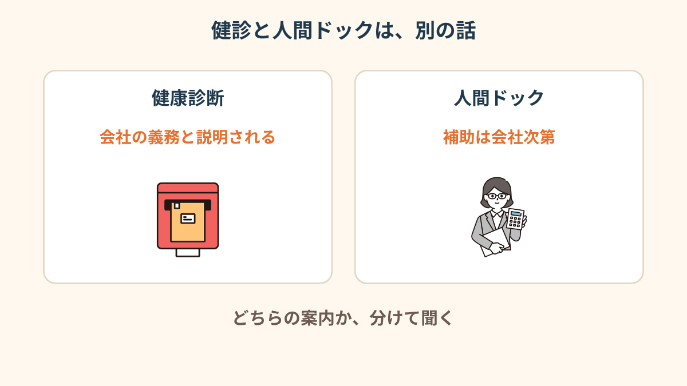
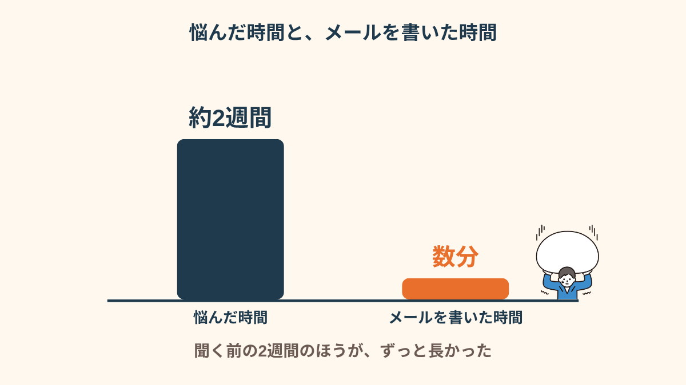
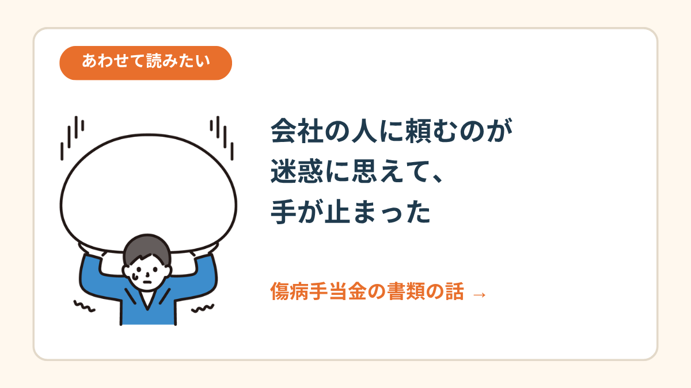
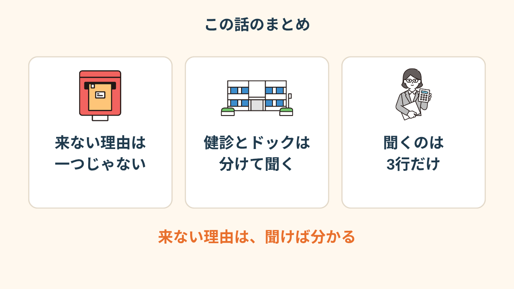

休職中の私は、その会話に入れない。
というか、そもそも私のところには、健診の案内なんて一通も来ていない。
忘れられたのかな。それとも、最初から外されたのかな。
同期のSNSに、健診の話が流れてきた
休職して4ヶ月目。
グループLINEは通知を切っていたんですが、たまたま開いたらその話題でした。
「午前の枠が埋まってる」「会社の補助、今年から増えたらしい」みたいなやり取り。
私のメールボックスを見直しました。
総務からのメールは、休職の手続きの連絡が最後。
健診の案内は、迷惑メールのフォルダまで探したけど、どこにもありませんでした。

案内が来ないだけなのに、「自分は会社の人数に数えられていないのかも」と思ってしまったんです。
休職してから、そういう方向に気持ちが傾きやすくなっていました。
「正直、健診なんて受けたくもないんですよ。でも、来ない、というのが堪えました。私だけ名簿から消された感じがして、その晩は寝つけなかったです」
案内が来ない理由は、一つじゃなかった
ネットで調べて、案内が来ない理由は一つではないと知りました。
休業中の人は定期健康診断の対象にしなくてもよい、という説明を見かけたこと。
会社がそれに沿って、休職者の名簿を別にしているかもしれないこと。
それか、ただの連絡漏れ。

つまり、「外された」とは限らない。
「忘れられた」とも限らない。
どれなのかは、聞いてみるまで分からない、ということです。
「調べるほど、方針なのかミスなのか分からなくなって。でも、悪意があるのかも、と思ってた最初の夜よりは、気持ちが軽くなりました」
聞けなくて、2週間が過ぎた
理由が分かったあとも、総務に聞くのは2週間ほど先延ばしにしました。
聞いたら、藪をつついてしまいそうで。
「休職中なのに健診を受けたいって、元気じゃん」と思われるのも怖かった。


健康診断と人間ドックは、別の話だった
聞く前に、もう一つ知っておけてよかったことがあります。
健康診断と、人間ドックは別物だということ。
私が気にしていたのは、実は会社の補助がつく「人間ドック」のほうの案内だったんです。

同期のLINEで流れていた「補助が増えた」も、ドックのほうの話でした。
健診とドックを一緒くたにして聞いていたら、総務も答えにくかったと思います。
総務への一言を、3行に絞った
長い文章を書くと、また夜が潰れます。
聞くことを3行に絞って、メールで送りました。

- 休職中も、健康診断の案内は届く運用ですか
- 人間ドックの補助は、休職中も対象になりますか
- 復職後の健診は、どうなりますか
事情は長く書かず、聞くのはこの3つだけ。
返事は翌日に来て、「休職中は対象外の運用ですが、復職後に改めてご案内します」というものでした（会社によって違うと思います）。
忘れられたわけでも、外されたわけでもなかった。
肩の力が抜けて、2週間ぶりにちゃんと眠れました。
「『対象外の運用です』と一言書いてあるだけで、あんなに楽になるとは思わなかったです。聞く前の2週間、何だったんだろうって」

人事に頼むのが迷惑に思えた話 →
この記事に、聞いてみたいことはありますか？
「自分の場合はどうなんだろう」と思ったことを、気軽に書いてみてください。いただいた質問は個別にお返事したうえで、匿名で記事にすることがあります。